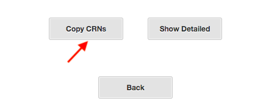
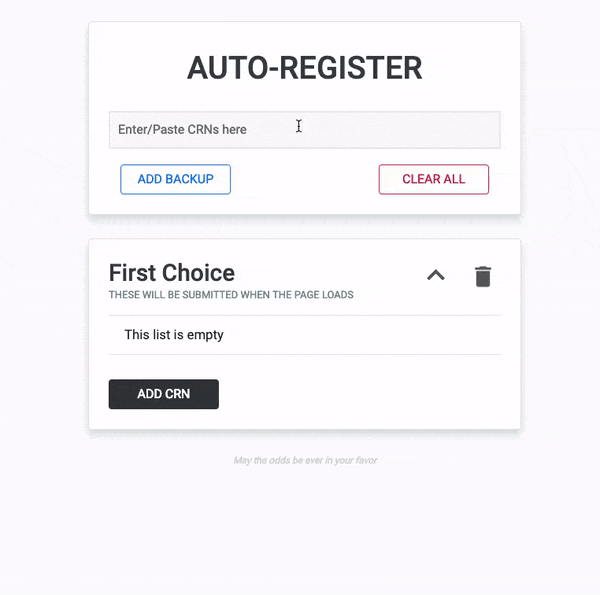

Step 1: Get your CRNs
Generate your schedule(s) from KFUPM
Scheduler and copy your CRNs.

Note: Getting CRNs from KFUPM
scheduler only makes the process easier for you.
You may get your CRNs however you like.
Step 2: Enter your CRNs
Paste your CRNs into the input box (no editing required). If you did not use
KFUPM scheduler, you can add each CRN one by one or all together,
separated by a space.
Step 3: Add your CRNs
Add your CRNs to First Choice by clicking on the ADD CRN
button.
You can have a maximum of 10 CRNs per submission.

Step 4: Add a backup (Optional)
The extension also provides you the option of adding backup CRNs. After clicking on the
ADD BACKUP button, a new submission appears. Add your backup CRNs to this
submission.
You can have a maximum of 4 backups.
Step 5: All set
When it's time for registration, all you have to do is go to the Register
classes (Add/Drop) page in KFUPM Portal, submit the term when
your registration opens. The extension will handle the rest.
What does the extension do?
When the Register classes page opens, the extension will automatically fill
the
First Choice CRNs and submit. After the page updates, the
extension will now only fill any subsequent backup CRNs. You may also use
the 'Enter' key to submit.